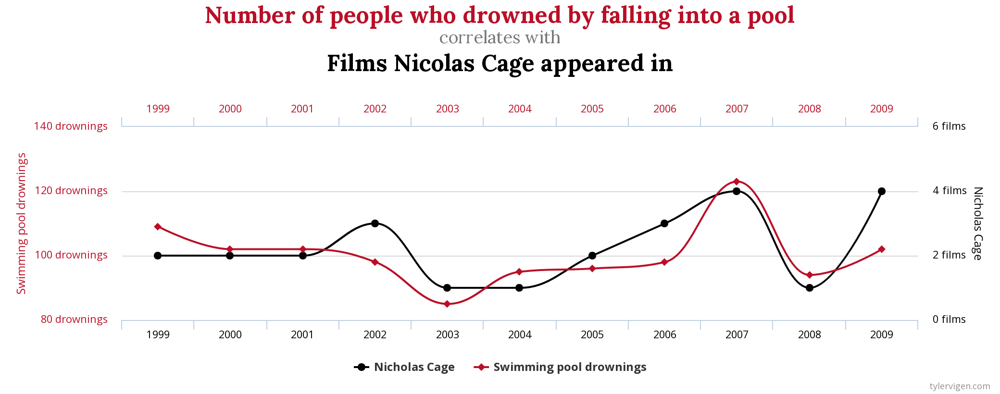

Correlation is a statistical measure that describes the relationship between two variables. It is a value between -1 and 1 that indicates the strength and direction of the relationship. A value of 1 indicates a perfect positive correlation, meaning that the variables move in the same direction, while a value of -1 indicates a perfect negative correlation, meaning that the variables move in opposite directions. A value of 0 indicates no correlation.
The intuition behind correlation is simple: it tells us how closely two variables are related to each other. For example, if we have data on the stock prices of two companies, we can use correlation to determine how closely their stock prices move together. If the correlation is high, we can expect that when one stock goes up, the other stock is likely to go up as well.
The formula for correlation is as follows:
where and are the two variables, covariance is the measure of the relationship between the variables, and is the standard deviation of the variables.
In a financial and portfolio management context, correlation is used to identify stocks that are likely to move together. This is important because if we have a portfolio of stocks that are highly correlated, a drop in one stock will likely lead to a drop in all of the other stocks as well. By identifying stocks with low correlation, we can diversify our portfolio and reduce the overall risk.
Correlation is markedly different from causation in that it describes the relationship between two variables, but does not indicate that one variable causes the other. For example, a high correlation between ice cream sales and crime rates does not mean that ice cream causes crime. It is likely that a third variable, such as temperature, is causing both ice cream sales and crime rates to increase. Tyler Vigen’s Spurious Correlations website presents a host of relationships between variables that appear to be highly correlated, but are in reality unrelated. Based on this data, one could think we have to stop Nicholas Cage from making any more movies:

Stealing the declaration of independence or falling into a pool?
To illustrate with code, here is a Python code snippet that demonstrates how to calculate correlation using the pandas library:
import pandas as pd
# create a sample dataframe
data = {'stock1': [1,2,3,4,5],
'stock2': [5,4,3,2,1]}
df = pd.DataFrame(data)
# calculate correlation
correlation = df.corr()
# let's see the results
print(correlation)
This will output the correlation matrix of the dataframe, which shows the correlation between all the variables considered.
In conclusion, correlation is a useful tool for understanding the relationship between two variables. It is commonly used in financial and portfolio management to identify stocks that are likely to move together and diversify portfolios. However, it is important to keep in mind that correlation often does not indicate causation.